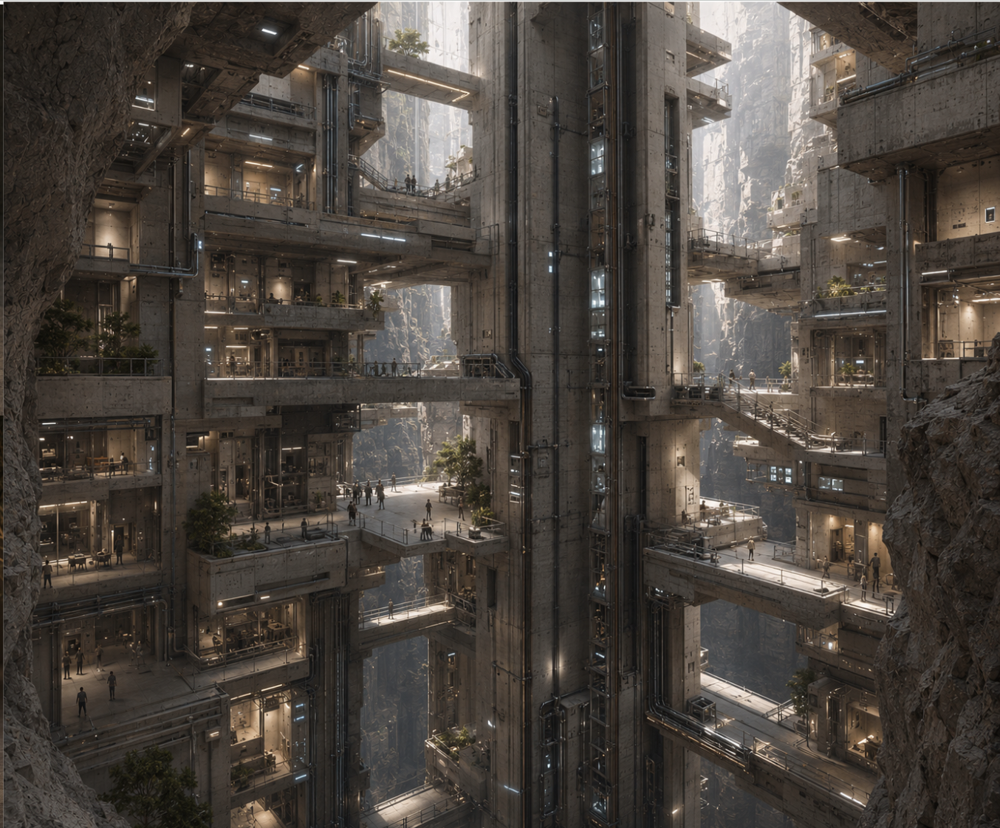
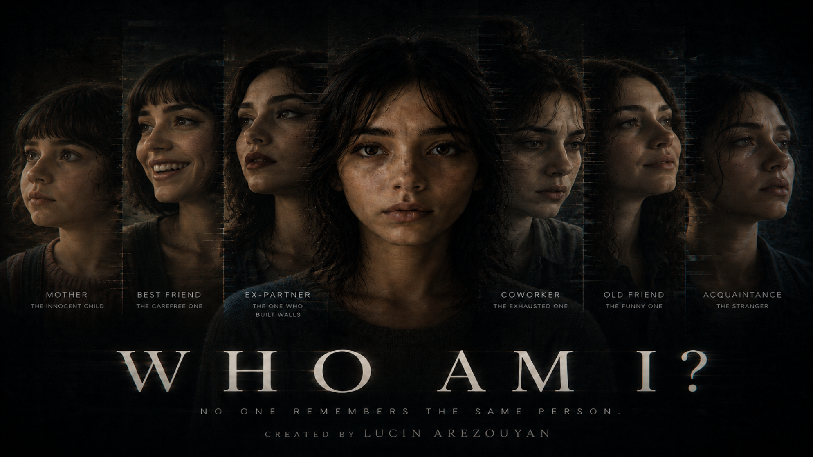

2046 Alternate Future

2046 an Alternative Future explores a design affected by dwindling resources and the repurposing of technology. AI generation was used to combine multiple environmental and cultural images, exploring different textures and structures to create a new environment.
Who Am I?

Who Am I? follows the main character, Maya, through a world where everyone sees her differently based on their relationship with her and their perception of one another. As these different perceptions begin to affect her, Maya spirals down a path that leads her to question who she really is.
Elevator/Hold Music
A repetitive beat made to emulate the calm feeling of elevator and hold music. Devoid of lyrics, the piece focuses on creating a simple and relaxing beat that listeners can enjoy.